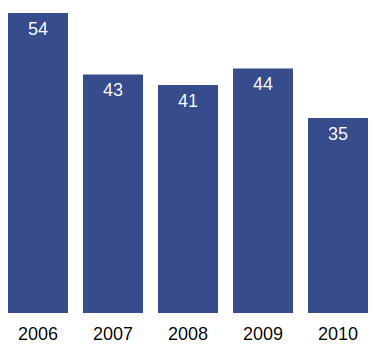

Visualização de Dados 2018.1 Lista de Exercícios 1
Informações Gerais
O objetivo desta lista é praticar os conceitos vistos em sala e construir uma base de código que será possivelmente útil para o projeto da disciplina.
É recomendada a leitura dos capítulos 1 e 2 do livro Interactive Data Visualization for the Web 2nd Edition e também o uso da documentação da Mozilla Developer Network.
Data de Entrega
A entrega deverá ser feita via GitHub até 29/03/2018 até 23:59. Instruções para entrega no Google Classroom. Os arquivos deveram ser entregues dentro de uma pasta chamada lista1.
Problema 1
Crie um arquivo chamado
problema1.html. Neste arquivo crie um elemento SVG que mostre as 3 primeiras letras do seu login (se você estiver se sentindo aventureiro, faça o login completo).
Por exemplo, considere o login de "John Adam Smith": "JAS". O resultado deve ser semelhante a
Para sua solução você deve usar somente elementos de SVG line, polyline, rectangle, e path. Você não precisa usar curvas (mas pode se desejar).
Sua solução deve ser desenhada em um svg de 250x150. Por exemplo, você pode copiar o código seguite na sua página
<svg id="initials" width="250" height="150">
<!-- Os seus elementos svg aquiYOUR SVG HERE -->
</svg>
Problema 2
Crie um arquivo chamado problema2.html. Neste arquivo inclua o arquivo datasetProblema2.js. Este arquivo define um conjunto de dados sobre a quantidade de livros lidos por uma pessoa ao longo dos anos. Para cada ano temos informação da quantidade de livros lidos (campo books) e o gênero favorito daquele ano (favoriteGenre). Queremos construir um gráfico de barras para mostrar a quantidade de livros lidas durante os anos. O seu gráfico de barras deve se assemalhar ao seguinte:

A diferença será que as barras devem ser coloridas de acordo com gênero favorito de cada ano. Romance , Policial, Biografia, Ficcao, Conto, Cronica e Poesia devem ser coloridos por ['#fbb4ae','#b3cde3','#ccebc5','#decbe4','#fed9a6','#ffffcc','#e5d8bd'] (nessa ordem).
Problema 3
No mesmo arquivo de solução do problema 2, escreva uma função que destaca uma barra dado o ano. Mais especificamente, escreva uma função chamada highlightYear que recebe um ano (exemplo 2002) e muda a borda da barra correspondente para a cor preta e de uma largura grande para que ela seja destacada das outras. Esse highlight deve ser de acordo com um slider criado com o código abaixo
<div id="controls">
<label for="year">Year:</label>
1990
<input type="range" id="year" min="1990" max="2017" value="2002"
onchange="highlightYear(this.value)">
2017
</div>